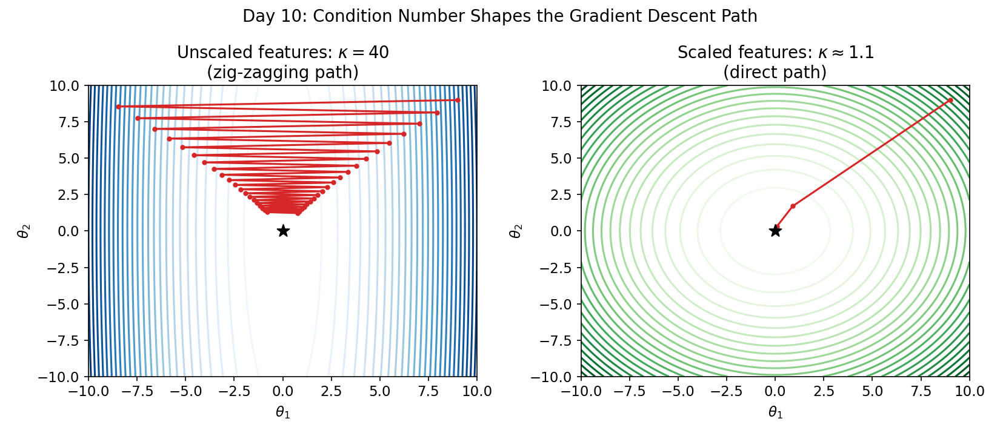

Chapter 1.5: Adaptive Optimizers — An Optional Deep Dive
Momentum, AdaGrad, RMSprop, and Adam. Prerequisite: Level 1, Day 9.
This entire chapter is optional. Lipschitz constants, Robbins-Monro conditions, and Adam's bias-correction terms are genuinely graduate-level optimization theory — this is not beginner material dressed up to look hard, it is hard, and that's fine. It's okay to skim the proofs on a first pass and come back after you've used these optimizers a few times in practice.
One honest note on scope: we checked the rest of this book, and Adam does not explicitly resurface by name in later chapters — scikit-learn's built-in regressors handle their own optimization internally. What does resurface constantly is the underlying intuition (badly-scaled features slow down optimization). You can safely jump straight to Level 2 and come back here later.
1. Convergence Rates and Learning Rate Dynamics
If $L(\theta)$ is convex and $L$-smooth (its gradient is Lipschitz continuous with constant $L_{\text{Lip}}$): $$\|\nabla L(\theta_1) - \nabla L(\theta_2)\|_2 \le L_{\text{Lip}} \|\theta_1 - \theta_2\|_2$$ Then choosing $\eta < \frac{2}{L_{\text{Lip}}}$ guarantees Batch Gradient Descent converges. For OLS, $L_{\text{Lip}} = \lambda_{\max}\left(\frac{1}{n} X^T X\right)$ — the same condition number from Level 1, Day 6. Badly-scaled features stretch this into a narrow valley; scaling compresses it into a symmetric bowl.

2. Polyak-Ruppert Averaging
SGD is also a stochastic approximation algorithm. Under Robbins-Monro conditions ($\sum \eta_k = \infty, \sum \eta_k^2 < \infty$), SGD converges to the true parameter $\theta^*$. Averaging the iterates, $$\bar{\theta}^{(k)} = \frac{1}{k} \sum_{j=1}^k \theta^{(j)}$$ achieves optimal asymptotic variance, satisfying a Central Limit Theorem: $\sqrt{k}(\bar{\theta}^{(k)} - \theta^*) \xrightarrow{d} \mathcal{N}(0, \Sigma)$. This lets you build confidence intervals directly from online SGD runs — no matrix inversion required.
3. Momentum, AdaGrad, RMSprop, and Adam
- Momentum: adds a fraction of the past update step: $v^{(k+1)} = \beta v^{(k)} + \eta \nabla L(\theta^{(k)})$, $\theta^{(k+1)} = \theta^{(k)} - v^{(k+1)}$ — accelerates descent, dampens oscillation.
- AdaGrad: adapts learning rates per-parameter by dividing by cumulative squared gradients — but stalls as the step size shrinks to zero.
- RMSprop: fixes AdaGrad's stall with an exponentially decaying average of squared gradients: $v^{(k+1)} = \beta v^{(k)} + (1-\beta)(\nabla L)^2$.
- Adam: combines Momentum (first moment $m_t$) and RMSprop (second moment $v_t$) with bias correction: $$m_t = \beta_1 m_{t-1} + (1-\beta_1) g_t, \quad v_t = \beta_2 v_{t-1} + (1-\beta_2) g_t^2$$ $$\theta_{t+1} = \theta_t - \frac{\eta}{\sqrt{\hat{v}_t} + \epsilon} \hat{m}_t$$
Recap
- A high condition number turns the loss surface into a narrow valley, forcing plain gradient descent into slow zig-zagging.
- Polyak-Ruppert averaging turns SGD into a statistical estimator with its own confidence intervals.
- Momentum, AdaGrad, RMSprop, and Adam each patch a specific weakness of plain gradient descent.
Exercise: Adam From Scratch
Continuing Level 1 Day 9's optimizers_comparison.py, implement AdamRegressorFromScratch, plot its loss trajectory against batch GD and SGD, then re-run all three on unscaled features. Which optimizer degrades the most without scaling?
Formula Cheat Sheet
| Concept | Formula |
|---|---|
| Lipschitz bound | $\|\nabla L(\theta_1) - \nabla L(\theta_2)\|_2 \le L_{\text{Lip}}\|\theta_1-\theta_2\|_2$ |
| Safe learning rate | $\eta < 2/L_{\text{Lip}}$ |
| Polyak-Ruppert average | $\bar\theta^{(k)} = \frac{1}{k}\sum_{j=1}^k \theta^{(j)}$ |
| Momentum update | $v^{(k+1)}=\beta v^{(k)}+\eta\nabla L(\theta^{(k)})$ |
| Adam update | $\theta_{t+1} = \theta_t - \frac{\eta}{\sqrt{\hat v_t}+\epsilon}\hat m_t$ |
References
- Robbins-Monro Asymptotics: Polyak and Juditsky (1992), "Acceleration of Stochastic Approximation by Averaging".
- Convex Optimization: Boyd & Vandenberghe. Cambridge University Press.
- Adam: Kingma, D.P. and Ba, J. (2015), "Adam: A Method for Stochastic Optimization," ICLR.